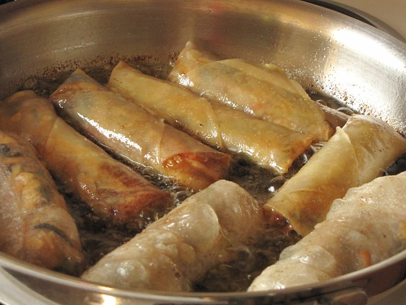

Spring Roll

"spring rolls - fry up" by
papayatreelimited
is licensed under
CC BY-NC 2.0


 .
.
What is it?
Spring rolls are a perfect snack for most meals. You must have seen many
fillings used in these rolled up bundles of joy. This recipe is packed
full of flavour that you have to try!
I like mine to be fried in oil but you can always use an air fryer. Do
note that they may not be as flaky as mine.
Ingredients
- 2 ounces dry soy vermicelli
- 4 eggs, beaten
- 1 onion, finely chopped
- 2 ounces mushrooms, drained and chopped
- ¾ (4 ounce) can small shrimp, drained and chopped
- 1 pound lean ground pork
- 2 tablespoons vegetable oil
- 1 carrot, shredded
- 2 ounces crab meat
- 3 ounces bean sprouts
- 2 pinches ground black pepper
- 1 tablespoon soy sauce
- 3 tablespoons fish sauce
- 1 clove garlic, chopped
- 20 rice wrappers (6.5 inch diameter)
- 1 quart oil for deep frying
Steps
- Soak the vermicelli 30 minutes in warm water; drain.
-
In a large bowl, mix the vermicelli, eggs, onion, mushrooms, shrimp,
pork, vegetable oil, carrot, crabmeat, bean sprouts, pepper, soy sauce,
fish sauce and garlic.
-
One by one, moisten the rice wrappers with a damp tea towel and fill
with 2 to 3 tablespoons of the vermicelli mixture. Roll the wrappers,
and allow them to set for 30 minutes.
-
In a large saucepan, heat the oil to 375 degrees F (190 degrees C).
-
Fry the spring rolls one or two at a time until golden brown, about 3
minutes. Drain on paper towels.
Recipe Credits:
All Recipes